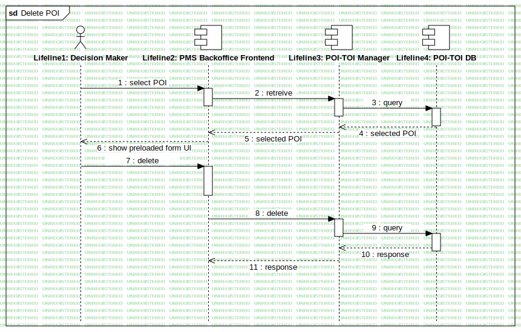

Delete POIs
UMLInteraction
RASTA
::
Requirement Analysis
::
Generic Use Cases
::
Edit/Delete POI
::
Delete POIs
Description
These interactions report a sample of edit or delete POI from the system.
Diagrams

Delete POI
Participants
Lifeline1: Decision Maker
Lifeline2: PMS Backoffice Frontend
Lifeline3: POI-TOI Manager
Lifeline4: POI-TOI DB
Messages
select POI (Lifeline1→Lifeline2)
retreive (Lifeline2→Lifeline3)
query (Lifeline3→Lifeline4)
selected POI (Lifeline4→Lifeline3)
selected POI (Lifeline3→Lifeline2)
show preloaded form UI (Lifeline2→Lifeline1)
delete (Lifeline1→Lifeline2)
delete (Lifeline2→Lifeline3)
query (Lifeline3→Lifeline4)
response (Lifeline4→Lifeline3)
response (Lifeline3→Lifeline2)
Properties
Name
Value
name
Delete POIs
stereotype
null
visibility
public
isReentrant
true
Owned Elements
Delete POI